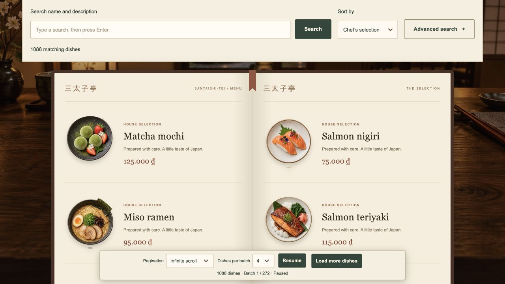
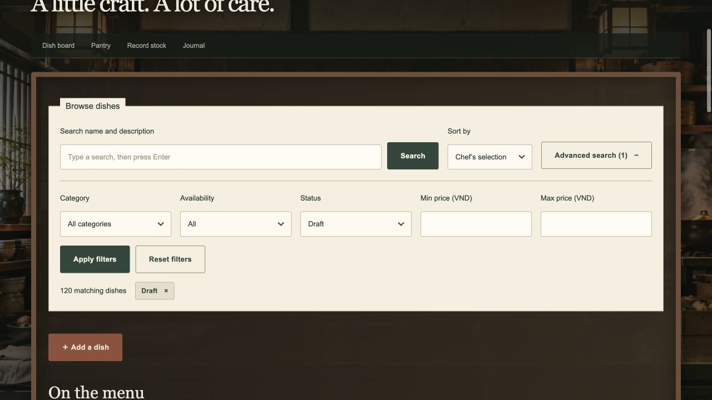

三太子亭
Santaishi-tei
Finding a dish in a growing menu
Block 7 · Pagination, filtering & search
Tam Thái Tử
24127278 · 24127322 · 24127497
The final experience


One browsing system serves the public menu and the staff workspace.
A short tour of the product
- Find a dishType
salomn nigiir, then press Enter. - Narrow the selectionOpen Advanced search, apply a category or price range, then sort.
- Change the browsing modePage numbers → Load more → Infinite scroll → Pause.
- Return to the same queryCopy the URL, reload and inspect the saved batch.
The live demo is optional: the screenshots and diagrams also tell the story offline.
Block 7 extends the existing CSR app
1,000+required dish records
Same React application.
Same Supabase database.
Same restaurant schema.
- Server-side paging in all three modes
- Server-side search, filters and sorting
- At least full-text search
- Bookmarkable browsing state
- Indexes supporting the query workload
Keep the restaurant design and permissions while improving how dishes are discovered.
Prepare enough data to test realistically
Variety without new images
Reuse existing categories and photos. Vary names, prices, availability and creation dates.
Preserve existing work
Insert-only import; stable numbered slugs prevent duplicates. Transactions and fingerprints check preservation.
Import result recorded on 26 October 2026: 11 original + 1,200 demo = 1,211 dishes. The importer adds no recipes or stock journals.
From a user action to one result batch
GET /api/menu?page=2&pageSize=12&q=miso&sort=price_asc
{ "ok": true, "data": { "items": [...], "page": 2, "hasNext": true, ... } }Public: /api/menu · Staff: /api/dishes · This example abbreviates the response.
The database returns a bounded batch
12dishes requested for page 3
OFFSET = (3 − 1) × 12 = 24 LIMIT 12 OFFSET 24
Skip the first 24 matching rows; return the next 12.
- Count matching records as an aggregate.
- Select only the requested IDs with SQL limits.
- Read those records through Prisma.
- Return page metadata with the records.
Repeatable-read transaction; unique ID breaks sorting ties.
The last page may contain fewer rows. The browser never receives the entire catalog in one paging request.
Three modes, the same server paging
| Mode | Trigger | Display behavior | Best fit |
|---|---|---|---|
| Page numbers | Choose a page | Replace batch; dining book flips | Jump to a known position |
| Load more | Press a button | Append one batch | Browse at a chosen pace |
| Infinite scroll | List end is visible | Append; recheck after completion | Continuous exploration |
Pause, errors, no more results or leaving the list end stop automatic loading. Mode switching stays usable.
Search and narrow results on the server
Search after submission
Typing edits local input. Enter or Search submits the query.
- temp
- Prefix matching finds tempura.
- tempura shrimp
- Both words match in either order.
- "shrimp tempura"
- Quoted phrases keep word order.
Apply filters together
Category, availability and price range; publication/archive status for staff.
Choose a useful order
Name, price, dates, chef’s selection or relevance. A server whitelist controls ordering.
Full-text search weights dish names above descriptions. Every plain query word must match; private recipe instructions are not searched.
Why the salmon typo failed
One swap changes several trigrams
salmon → sal · alm · lmo · mon salomn → sal · alo · lom · omn
Similarity fell below the threshold. With two misspelled words, the dish was excluded.
Illustration omits word-boundary markers.Match the typo pattern directly
salomn nigiir↓ adjacent-letter swapssalmon nigiriCombine prefix/full-text matching, trigram similarity and whole-word swapped variants.
A general fix for dish names—not a salmon-specific rule. Not every possible typo is guaranteed to match.
UX decisions driven by feedback
| Observed issue | Final decision |
|---|---|
| Requests while typing | Search only on Enter or Search |
| Filters crowded the menu | Expandable panel; active-filter chips remain visible |
| Loading froze the page | Background dish reads; guard duplicate requests |
| Toolbar obscured dishes | Compact floating controls shared by all modes |
| Up/down gesture felt awkward | Automatic end-of-list loading with Pause/Resume |
/menu?q=salmon&sort=price_asc&mode=more&page=3&pageSize=12
Bookmarks restore the query and saved batch—not a frozen database snapshot or all preceding batches.
Verification and lessons learned
Evidence
- 44 automated tests passed on 2 November 2026
- Bounded reads and non-overlapping batches
- Typos, prefixes, reversed words and visibility rules
- Read-only query plans confirmed index use
- Migration fingerprints preserved business records
Tradeoffs
B-tree indexes support common sorts. GIN indexes support full-text and trigram search.
Deep offsets and long scrolling sessions can become expensive. Cursor pagination and list virtualization are future options.
Fuzzy matching remains approximate; bookmarks reflect current data.
Keep each database read bounded, each state recoverable, and each control responsive.
Live database evidence: 26 October 2026. Test run uses isolated data; no live database or private environment access.